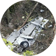
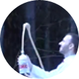

Acidente com o avião da Gol, que caiu no Mato Grosso após ser atingido por um jato Legacy, mata 154 pessoas, entre passageiros e tripulantes.
Suzane Von Richthofen é condenada a 39 anos de prisão pela morte dos pais, junto com seu namorado na época, Daniel Cravinhos, e o irmão dele, Cristian.
Lula vence Geraldo Alckmin no segundo turno e conquista seu segundo mandato como presidente do Brasil.
Morre o humorista Cláudio Besserman Viana, o Bussunda, do Casseta e Planeta. O humorista morreu durante a Copa do Mundo na Alemanha.
Morre o ator Raul Cortez, aos 73 anos. Ele sofria de câncer na região abdominal.
Após 47 anos como ditador em Cuba, Fidel Castro passa o comando do país ao irmão, Raúl, por conta de problemas de saúde.
O ex-ditador Saddam Hussein é condenado à forca pela morte de 148 xiitas. O vídeo com a execução dele correu o mundo dias depois.
Comandado por Muricy Ramalho, o São Paulo conquista pela quarta vez o título de Campeão Brasileiro.
Internacional de Porto Alegre derrota o Barcelona e vence pela primeira vez o Mundial Interclubes da FIFA.
Itália vence França nos pênaltis e é campeã da Copa da Alemanha. Os italianos ficam com quatro títulos, atrás apenas do Brasil, que caiu diante da França nas quartas-de-final.
Após 7 títulos mundiais, Michael Schumacher anuncia aposentadoria da Fórmula 1. A última corrida do ano, realizada no Brasil, dá ao espanhol Fernando Alonso o bicampeonato.
Se no futebol o Brasil decepcionou, no vôlei a seleção masculina venceu tudo que disputou: Mundial (2º título), Liga e Grand Prix (6º título). O trauma ficou para a seleção feminina, que, após uma campanha invicta no Mundial, perdeu a final para a Rússia no tie-break.
Microsoft aposenta o Windows XP e lança o Windows Vista, sistema operacional que foi considerado por muitos um desastre.
Sony lança o sucessor do Playstation 2, videogame mais bem sucedido da história até então. O Playstation 3 apresentou o conceito de jogos online com a rede Playstation Network e veio para competir com o Xbox 360, da Microsoft, lançado cerca de um ano antes.
Fora da briga por gráficos cinematográficos e jogos online, a Nintendo apostou na simplicidade e revolucionou o mercado com o Wii, console que inaugurou a febre dos jogos com sensor de movimentos.
Microsoft lança o Zune, tocador de MP3 que tentava abalar o reinado dos iPods, na época em sua 5ª geração. Mas, no Brasil, a febre eram os MP3 players com formato de pen drive, visor monocromático e incríveis 2 GB de capacidade.
Em uma época onde não havia a briga entre Apple e Samsung, o universo dos telefones celulares era dominado por marcas como Nokia, Palm, Blackberry e HTC. Em vez de iOS e Android, havia Symbian e Windows Mobile. Mas ostentação mesmo era ter um celular com vários botões, teclado QWERTY, tela de 320 pixel de resolução e 90 MB (sim, mega) de capacidade.
Surgiu o Twitter, rede social que vinha com uma proposta diferente: os usuários podiam fazer posts com, no máximo, 140 caracteres.
Lançado em 2004, o Orkut ganha a funcionalidade de mostrar quem visualizou o perfil do usuário. A polêmica ferramenta não afetou a popularidade no Brasil, que dominava a rede social, com cerca de 20 milhões de usuários.
Se no Brasil o Orkut era a rede social preferida, no exterior o Myspace reinava absoluto. Enquanto isso, o Facebook corria por fora para conquistar a atenção dos internautas.
Milhões de pessoas adotaram uma segunda vida na internet com o Second Life, jogo que criava um mundo virtual 3D onde as pessoas podiam interagir umas com as outras e ter bens como carros, casas, roupas etc. Dava até pra ficar rico (no mundo real) vendendo itens para outros usuários.
Criado em 2005, o Youtube tem uma ascensão meteórica e é vendido ao Google por US$ 1,6 bi.
O vídeo que conta a história de uma idosa usuária de maconha cai no gosto dos internautas e torna conhecida pelo grande público a atriz Maria Alice Vergueiro.
Coca-Cola e Mentos. Depois que alguém teve a ideia de filmar a mistura dessas duas coisas, o Youtube foi tomado por uma avalanche de vídeos que mostravam o chafariz de refrigerante que se formava em contato com a bala.

O vídeo de um garoto que imitava os movimentos do personagem Darth Maul com um bastão é postado no Youtube e viraliza, tornando o “Star Wars Kid” conhecido no mundo todo.
Outra febre do Youtube também tem um garoto como protagonista. Fazendo “lip-sync” da música Dragostea din tei, o rapaz virou um fenômeno da internet.
Vídeo da apresentadora Daniela Cicarelli com o namorado em “cenas quentes” na praia cai na web e enlouquece internautas.
“O jardineiro é Jesus. E as árveres somos nozes.” A luta de um cantor gospel para gravar a frase da maneira correta faz a alegria da web.
Em um vídeo de 6 minutos o dançarino Judson Laipply mostra 40 anos de evolução da dança, desde Elvis Presley até Jay-Z.
Milhões de pessoas param para ver o vídeo de um bebê panda que assusta a mãe com um espirro estrondoso.
Dez anos antes de Batman e Superman se enfrentarem no cinema, o destaque é o filme-solo do herói de capa vermelha. O terceiro filme da franquia X-Men completa a saga das adaptações de quadrinhos no cinema. O ano ainda tem outros filmes que arrasaram quarteirões, como O Grande Truque, O Segredo de Brokeback Mountain e O Código Da Vinci.
A Petrobras encerra o ano avaliada em US$ 103 bilhões.
Criação de vagas de emprego tem alta de quase 6%, segundo o IBGE.
O índice oficial da inflação termina o ano com menos de 3%.
O dólar, por sua vez, é cotado a R$ 2,13.